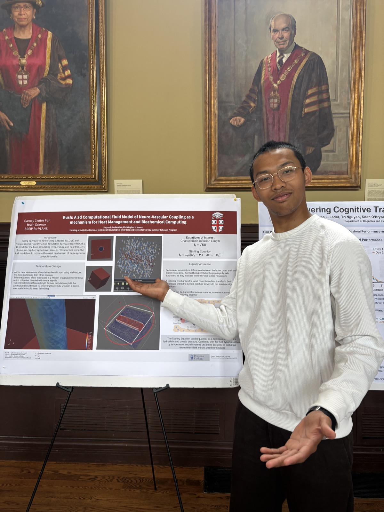

Project 1
Common Crimes in Florida’s University Campuses
This dashboard examines common types of crimes reported across university campuses in Florida, helping compare public safety patterns across institutions.
Pomona College · Economics · Econ 120
I am Jinyao DeSandies, a freshman at Pomona College taking Econ 120: Economics of Crime. This portfolio presents six Tableau dashboards exploring campus crime in Florida, incarceration in Florida, U.S. crime trends, gun violence, global terrorism, and an independent crime data project on crimes against humanity.
These dashboards summarize different dimensions of crime and criminal justice, including university campus crime, incarceration patterns, national crime trends, gun violence, global terrorism, and an independent project analysis.
Each dashboard is paired with a written project report explaining the dataset, visualization choices, economic reasoning, and major findings. View the full write-ups here.
Project 1
This dashboard examines common types of crimes reported across university campuses in Florida, helping compare public safety patterns across institutions.
Project 2
This dashboard explores incarceration in Florida, connecting criminal justice outcomes with demographic, geographic, or institutional patterns.
Project 3
This dashboard places crime trends in a broader national context, allowing comparison across time, category, and geography.
Project 4
This dashboard focuses on gun violence as a public safety and criminal justice issue, highlighting patterns that can be analyzed through economic and policy lenses.
Project 5
This dashboard examines terrorism through a global dataset, connecting violence, geography, and political instability to broader questions about crime and security.
Project 6
This independent dashboard extends the course themes through a self-directed analysis of crimes against humanity and mass atrocity data.
Beyond the Economics of Crime coursework, I conducted computational neuroscience research at Brown University’s Carney Center for Brain Science as a Carney Summer Scholar.

Carney Summer Scholars · SREIP for VLANS
A mechanism for heat management and biochemical computing
Working with Christopher I. Moore at the Carney Center for Brain Science, I built a 3D model of a neural–capillary system using the open-source meshing software SALOME and the computational fluid dynamics solver OpenFOAM. The model simulates temperature and fluid transfer in the brain to explore how neuro-vascular coupling could support heat management and chemical signaling between neurons.
For academic, research, or resume inquiries, contact me at:
Email: jinyaodesandies@gmail.com
GitHub: github.com/jinyaodesandies
LinkedIn: linkedin.com/in/jinyaodesandies
Tableau Public: public.tableau.com/app/profile/jinyao.desandies/vizzes